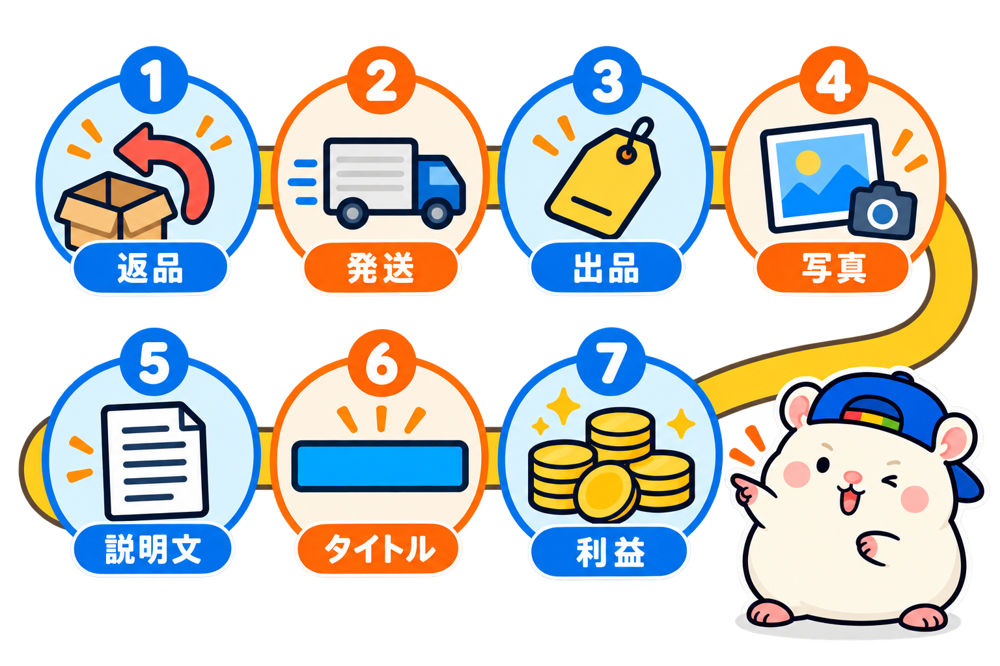
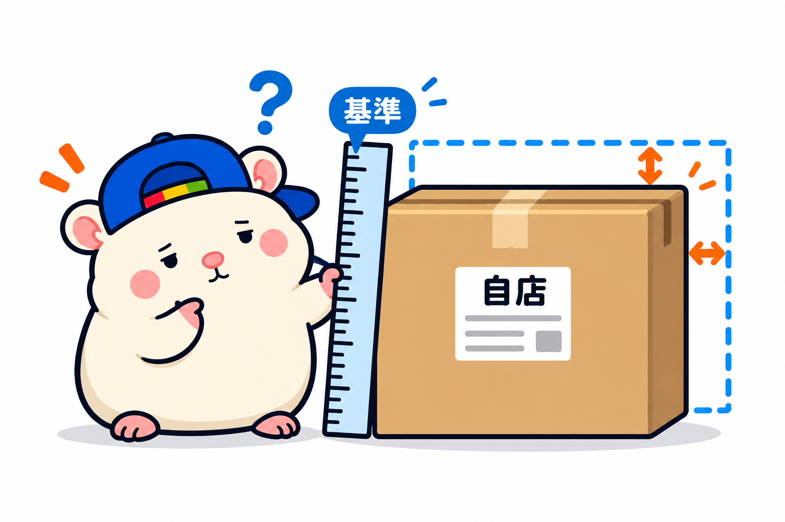

eBayジャパンの受賞セラーを、7回に分けて調べてきました🐹
返品、発送、出品数、商品ページ、説明文、タイトル、そして売上と利益。
7回ぶんを通して見えたのは、このことです。
上の店は、特別なことはしていない。自分の品に合った「ふつう」を、全部の品でそろえていた。
この記事は、7回でわかったことを1本にまとめたものです。
最後に、自分の店と比べられるチェックリストをつけました。
調べたお店と、調べ方
対象は、2025 eBay Japan Awardsで受賞したセラーです。
第1弾と第2弾は20店、第3弾からは、eBayの検索に出てくる18店を見ました。
見たのは、どれも公開されている情報です。
アメリカのお客さんに見える商品ページ、出品の設定、売れた商品の検索、評価の数。
お店の名前は出していません。
受賞セラーの積み重ねに敬意を込めて、学ばせてもらうために調べています。
7回の結果を、1枚にまとめると

| 回 | 調べたこと | わかったこと |
|---|---|---|
| 第1弾 | 返品・配送除外国 | 返品は「30日・返送料無料」がいちばん多い |
| 第2弾 | 配送方法・発送日数 | 便はSpeedPAKが最多。発送は1日の店と10日の店に分かれる |
| 第3弾 | 出品数と価格 | 出品数は、1品の値段で決まる |
| 第4弾 | 商品ページ | 説明文より、写真とItem specifics |
| 第5弾 | 説明文 | 短い英語とランク表の、定型文 |
| 第6弾 | タイトル | お客さんが選ぶ「決め手」だけを入れる |
| 第7弾 | 売上と利益 | 中央値で1日約19品、月の売上約2,600万円 |
ここから、お店づくりの順番に分けて見ていきます。
お店の設定: 返品と発送
返品は「30日・返送料無料」がふつう。
20店のうち9店が、この形でした。
返品を受ける15店のうち13店は、返送料をお店持ちにしています。
返品不可は5店。
トレカやフィギュアなど、戻ってきた品をたしかめにくいジャンルに多い形でした。
配送除外は、米軍基地あて・私書箱・ロシア。
米軍基地あて・私書箱は20店中17店、ロシアは15店が外していました。
発送は、1日の店と10日の店。
発送日数は1日が7店でいちばん多く、中央値は4日。
1日で送るには、品が手元にあることが前提です。
受賞セラーは、在庫を持っているお店が多くありました。
アメリカ向けには、20店のうち17店が、1〜4日で届く便を用意していました。
出品: 数と値段と交渉
出品数は、1品の値段で決まる。
100品ちょっとのお店から、5万品を超えるお店まで。
1品が安いほど出品が多く、高いほど少ない。
$100前後なら数千品、$1,000を超える品なら数百品が、上の店の目安でした。
値下げ交渉は、1点ものだけ。
中古バッグや楽器など、世界に1つの品を売るお店は、交渉を受けていました。
カメラやゲーム機など、型番で相場が決まる品のお店は、受けていません。
送料は、$500を超える品なら無料。
送料を別にしていたのは、軽くて安い品のお店だけでした。
商品ページ: 写真・項目・説明文・タイトル
写真は、中古か新品かで決める。
中古の高額品のお店には、24枚ぜんぶ使うところもありました。
新品が中心のお店は、1〜2枚です。
説明文より、Item specifics(商品の項目)。
18店の中央値は12項目。
Item specificsは、お客さんが商品を開く前に、検索で引っかかるところです。
説明文は、定型文。
18店中17店が、全品ほぼ同じ文でした。
書いているのは、配送・状態・関税・支払い・Japanの5つ。
英語は1文10語くらいで、中古の状態はランク表(S・A・B・C)で伝えます。
関税は、アメリカ向けとほかの国で分けて書くお店が、いちばん多くありました(8店)。
タイトルは、決め手だけ。
決め手は、品物の型で4つに分かれていました。
・機械・電子もの → 型番と状態
・ブランド・アパレル → 色と素材
・ホビー・キャラもの → 作品名と日本版
・パーツ・道具 → 型番と、合うかどうか
送料無料と記号は、ほとんどのお店が入れていません。
字数の中央値は64字でした。
数字: 売上と利益
18店の中央値(平均ではなく、大きい順にしたときの真ん中の値)で見ると、こうでした。
・1日に売れる数 約19品
・月の売上 約2,600万円
・利益 約400万円(AIの予測)
※売上と利益は、公開されている情報からの推定です。実際の数字とはちがいます。
1日1品ほどでも、1品の値段が高ければ、月1,000万円を超えるお店がありました。
利益の差をつくるのは、仕入れ方です。
相場が見える品は1割台、相場が見えにくい中古の品は2〜3割と予測しました。
中古の1点ものを売るお店では、100品出して、1ヶ月で売れるのは6〜7品(9店の中央値6.6%)。
出品の9割以上は、その月には売れていません。
それでも出し続けているから、毎日売れていきます。
7回を通して見えた、3つの共通点
1. 答えは、ジャンルで決まる
出品数、値下げ交渉、写真の枚数、タイトルの決め手、利益率。
どれも正解は1つではなく、売っている品で答えが変わりました。
上の店をまねするなら、自分と同じジャンルのお店を見る。
2. 凝ったことはしていない
説明文は定型で、英語は短い文。
動画を入れているお店は0店、サブタイトルは191品中1品でした。
特別な技ではなく、決めたことを全部の品でそろえていました。
3. 説明文より、検索結果の一覧に力を入れている
eBayで検索すると、商品が一覧で出てきます。
お客さんは、その一覧を見て、どの商品を開くかを決めます。
一覧に出るのは、1枚目の写真、タイトル、値段と送料など。
説明文は出ません。
例えば、同じカメラが一覧に10個出てきたとき。
開きたくなるのは、写真が見やすくて、タイトルに型番と状態が書いてあって、送料無料のものです。
説明文をどれだけ書いても、開いてもらえなければ読まれません。
だから上の店は、説明文より先に、一覧に出るところに力を入れていました。
・1枚目の写真に、全部をのせる
・タイトルには、決め手だけを入れる
・高い品は、送料無料にする
Item specificsも同じです。
お客さんが一覧を絞りこんだとき(ブランドや状態で絞るなど)、出てくるかどうかを決めます。
ぼくの店と比べてわかった、7つのずれ

毎回、ぼくの店も同じ方法で調べてきました。
合っていたところ。
・返品60日・返送料こちら持ち(最優秀賞のお店も60日でした)
・配送除外は68件(20店の中央値は63件)
・出品数は6,500品ほどで、送料は全品無料
・説明文は定型で、1文も短く、ランク表もある
ずれていたところ。
- 型番で相場が決まる品なのに、73%の品で値下げ交渉を受けていた
- Item specificsが5項目で、18店の中でいちばん少ない
- 中古なのに、写真が8枚
- タイトルの6割に、意味のないJapan系の言葉が入っていた
- 発送が3営業日(1日の店は在庫を持つ。ぼくの店は無在庫が中心)
- アラスカ・ハワイを外していた(受賞20店では3店だけ)
- 説明文に、EU向けの関税の一文と、お店の紹介がない
Japan系の言葉は、出品担当と相談して外しはじめました。
9月18日の時点で、4割まで減っています。
ほかのずれも、ひとつずつ直していきます。
チェックリスト: 上の店の「ふつう」と比べる
□ 返品は30日以上・返送料無料(返品不可にするなら、ジャンルの理由がある)
□ 海外向けの返品設定を入れて、アメリカの画面でたしかめた
□ 発送日数は4日以内。1日にするなら、品を手元に持つ
□ 出品数は、1品の値段に合っている($100前後なら数千品、$1,000超なら数百品)
□ 値下げ交渉は、1点ものだけ受ける
□ $500を超える品は、送料無料
□ 写真は、中古なら20枚以上、新品なら5枚前後
□ Item specificsを12項目以上埋める
□ 説明文は定型。1文10語まで、状態はランク表
□ 関税は国で分けて書く(EU向けは10月1日からのルールも)
□ タイトルに、自分のジャンルの決め手を入れる
□ 月の目標から出品数を逆算する(中古の1点ものなら、100品で月6〜7品が目安)
※各回とも、見本の数で調べています。全品ではありません。
無料で使えるツール
シリーズの中で作ったツールです。
▼タイトル組み立てツール(第6弾)
https://rental-space.net/tools/ebay-title-builder/
▼説明文テンプレート(第5弾)
https://rental-space.net/tools/ebay-description-template/
7回調べて、上の店に近づく道は、特別な技ではないとわかりました。
自分の品に合った「ふつう」を決めて、全部の品でそろえる。
それだけで、お店の形は上の店に近づきます。
チェックリストで、あなたの店はいくつ□が埋まりましたか?
次に調べてほしいことがあれば、教えてください。
リクエストがあれば、第8弾で調べます🐹
▼第1弾: eBay有力セラーのビジネスポリシーを調べてみた結果(返品・配送除外国)
https://rental-space.net/articles/2026-09-11-ebay-award-seller-return-shipping.html
▼第2弾: eBay有力セラーの発送を調べてみた結果(配送方法・日数)
https://rental-space.net/articles/2026-09-14-ebay-award-seller-shipping.html
▼第3弾: eBay有力セラーの出品数と価格を調べてみた結果
https://rental-space.net/articles/2026-09-16-ebay-award-seller-listing-count-price.html
▼第4弾: eBay有力セラーの商品ページを調べてみた結果
https://rental-space.net/articles/2026-09-17-ebay-award-seller-product-page.html
▼第5弾: eBay有力セラーの説明文を読んでみた結果
https://rental-space.net/articles/2026-09-18-ebay-award-seller-description.html
▼第6弾: eBay有力セラーのタイトルを読んでみた結果
https://rental-space.net/articles/2026-09-18-ebay-award-seller-title.html
▼第7弾: eBay受賞セラー どれだけ稼いでいるか調べてみた結果
https://rental-space.net/articles/2026-09-19-ebay-award-seller-sales-profit.html
▼中の人🏠(レンタルスペース23部屋・売上1.5億)のレンスペ実録
https://note.com/rentalspace_kiku
▼ブログ(eBay×レンスペ、全記事まとめ)
https://rental-space.net
▼この店のやり方は、ぜんぶ1冊にまとめてあります
リサーチ・出品・値付け・顧客対応まで、初月利益10万4,286円を出した実店舗の記録と手順を全部書いた教科書です。
読んだその日から、AI社員の作り方をそのまま真似できます。
『AI × eBay輸出の教科書 — 梱包以外、ぜんぶAI』
https://rental-space.net/kyokasho/ebay/
販売価格は3部売れるごとに2,000円ずつ値上がりします（上限あり）。内容・最新価格は販売ページをご確認ください。